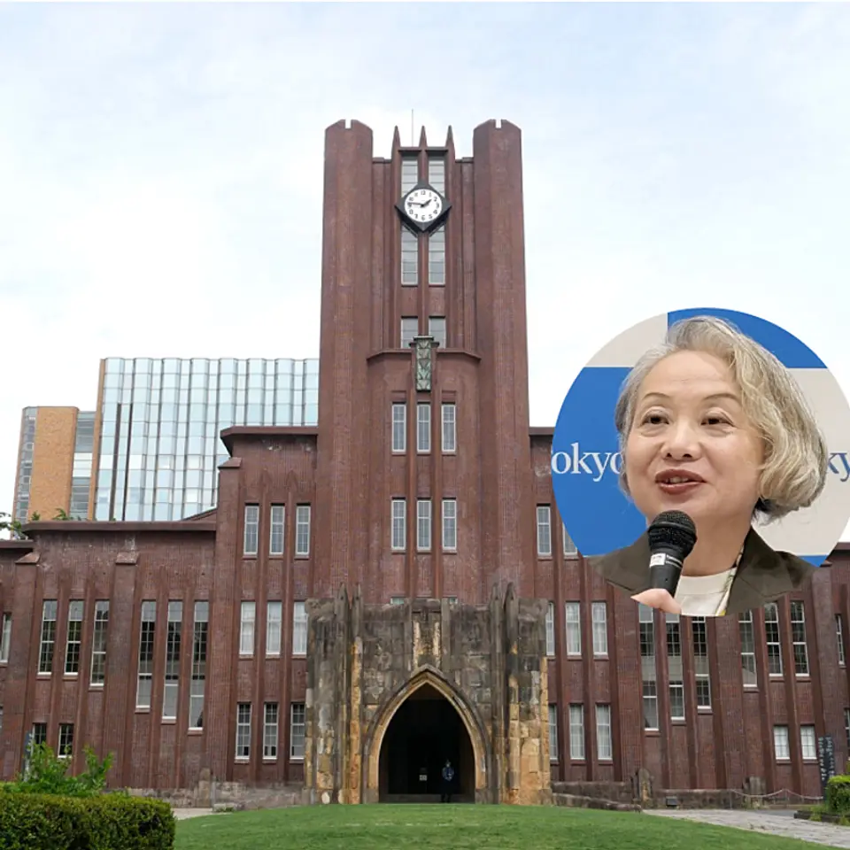

01【強制調査】ビール4社「カルテル疑惑」の重すぎる代償
発行日時：2026年10月8日 05:30 JST
あなたに関係ありそうな理由
価格を決める場面で、取引先との情報共有と競争法の境目をどう管理するかは、業種を問わず実務上の課題です。
概要
公正取引委員会が、ビール大手4社に対し、業務用ビールの卸売価格や価格改定の時期を相談していた疑いで、刑事手続を視野に入れた強制調査に踏み切ったと記事は伝える。対象はアサヒ、キリン、サントリー、サッポロで、国内のビール系市場で大きな比重を占める。調査は違反が確定したことを意味しないが、価格競争が働くかどうかを支えるルールに関わるため、事業者にも飲食店にも重い事案だ。単に同じ頃に値上げしたことではなく、価格や時期を事前にすり合わせたかが焦点になる。
背景には、需要と制度の両方の変化がある。記事では、2020年以降の段階的な税制改正で、350ミリリットル当たりのビール税額が63.35円から54.45円へ下がったことが紹介される。累計では22.75円の減税となる一方、値付けの説明は単純ではない。2024年の1人当たりビール消費量は33.7リットルで、2014年の42.6リットルを下回る。市場が伸びにくい中で、税制改正、原材料費、飲食店向けの取引条件が重なり、各社の価格判断は目立ちやすくなる。
記事が説明する独占禁止法の論点では、刑事事件になれば関係者の負担は大きく、仮に違反が認定されれば、関連売上を基にした課徴金が問われ得る。自主申告の順序により減免を受ける制度もあるため、社内で不自然な連絡や会合を把握した時点の対応が重要になる。表示コメントでも、問題は値上げのタイミングが近いこと自体ではなく、競争相手どうしが何を相談したかだという指摘があった。コンプライアンス部門だけに任せず、営業や調達を含めた記録と相談経路を整える必要がある。
利用者の側からは、ビールの税額が下がったのに価格がどう変わったのかを考えたくなる。ただ、税額、流通、原料、商品構成を分けずに価格だけを比べても判断は難しい。今回の件で注目したいのは、競争政策が最終的な価格だけでなく、価格に至る過程を見ていることだ。各社は調査への対応と説明を迫られる。今後は事実認定の行方に加え、飲食店向けの条件や消費者向け商品の価格にどのような影響が出るかを、推測と確認済みの情報を分けて追う必要がある。事実関係の公表と、再発防止策の実効性にも注目したい。
仕事や会話で使える一言
「価格の一致ではなく、価格を決める前に何を共有したかが競争法の核心なのですね。」
NewsPicks原文を読む
02カメラを外したMetaのスマートグラス、残る「見られる不安」
発行日時：2026年10月8日 05:30 JST
あなたに関係ありそうな理由
新しい端末の普及では、機能の便利さだけでなく、周囲の人が安心して受け入れられる設計と運用が成否を左右します。
概要
MetaのRay-Banブランドのスマートグラスは、カメラで写真や動画を撮り、AIや音声機能も使える端末として販売を伸ばしてきた。一方で記事は、本人が気付かないまま撮られる不安が根強く、学校や会場で利用を制限する動きや、「変態メガネ」という不名誉な呼び名まで生まれたと伝える。装着者にはハンズフリーの便利な機器でも、周囲には常に記録され得るカメラとして映る。この視点のずれが、端末の性能だけでは解けない普及の壁になっている。
そこでMetaは9月23日、カメラを搭載しない「Ray-Ban Meta Audio」を349ドルで発表した。マイクとAIを使えるが、撮影機能を外したモデルである。記事によれば、カメラ付き製品の販売も続ける一方、改造された端末ではカメラを無効化する仕組みや、私的な場面で使うモードも用意する。これは全ての懸念を消す処方箋ではない。表示コメントでも、カメラをなくしてもマイクで何を拾うのかという不安は残り、周囲の人が機能を見分けられるかが重要だという論点が挙がっていた。
スマートグラスの歴史には、Google Glassが利用場面の拒否感にぶつかった経験がある。記事は、GoogleもGeminiを使う眼鏡を計画していると伝え、AI企業にとって端末が利用者との接点とデータを得る器になる点に触れる。画面を取り出さずに音声で尋ねられることは、移動や作業の途中では魅力的だ。だが、AIが便利になるほど、発話、視線、周囲の会話をどこまで扱うのかという説明が求められる。端末の小型化は、利用者以外から見えにくくなることでもある。
このニュースは、製品から機能を一つ引けば信頼が戻るという単純な話ではない。撮影中であることを周囲が理解できる表示、店舗や職場での利用ルール、録音・保存・学習の範囲の説明を重ねて初めて、使う人と使われる場の双方が判断できる。導入する企業や施設なら、購入者の満足度だけでなく、同席者が拒否できるかを基準に加えたい。今後はカメラなしモデルの受け止め、利用可能な場所の変化、Metaや競合がデータの扱いをどこまで具体化するかを見るべきだ。便利さと安心の両方を測る利用実態の検証が続く。
仕事や会話で使える一言
「ウェアラブルは、使う本人の便利さと、周囲が安心できることを同時に設計できるかが勝負ですね。」
NewsPicks原文を読む
03ホルムズ海峡の通航回復後も続く、ディーゼル不足
発行日時：2026年10月8日 05:20 JST
あなたに関係ありそうな理由
物流や事業コストを考える際は、原油の輸送量だけでなく、実際に使う燃料へ精製して届ける工程まで分けて見る必要があります。
概要
ホルムズ海峡を通る原油の流れが回復しても、ディーゼルなど石油製品の不足はすぐには解消しない。記事はこのずれを、供給網を原油と精製品に分けて捉える重要性として示す。10月3日時点で海峡を通過する原油は日量1030万バレル、戦前の76％まで戻った一方、石油製品は日量130万バレルで、以前の2割超に対して11％にとどまるという。海峡を船が通れることと、トラックや建設機械に入る燃料が届くことは別の問題だ。
記事によると、中東の製油所は攻撃の影響で操業を止め、原油を軽油、航空燃料、ガソリンなどに変える能力そのものが傷んだ。原油の備蓄を放出しても、製油所が止まっていれば必要な製品を直ちに増やせない。G7が1億バレルの放出を決めた背景にも、この供給の詰まりがある。米国のディーゼル平均価格は1ガロン6.53ドル、カリフォルニア州では8.44ドルに達したと記事は記す。価格上昇は、燃料を直接使う運送だけでなく、農業、工事、非常用電源の費用にも波及する。
表示コメントでは、エネルギー安全保障を海峡という通り道だけで判断しないこと、精製設備と製品輸送の復旧が重要だという論点が出ていた。ディーゼルは工場や店舗で目立つ商品ではないが、荷物を運び、機械を動かし、停電時の電源を支える基礎的な燃料である。製油所の再稼働には安全確認、部品、電力、働く人の確保も必要になる。通航量の回復という分かりやすい数字だけで、危機が終わったと判断することはできない。
記事は完全な復旧が2027年になる可能性にも触れる。これは確定した予測ではなく、長期化リスクを意識させる材料だ。事業の側では、原油価格だけを予算前提にせず、軽油や輸送費の変動、代替調達先、在庫日数を別々に確かめたい。今後見るべきは、海峡を通る原油量に加え、各地の製油所の稼働、製品在庫、地域ごとの小売価格だ。途中の工程を見落とさないことが、ニュースを自社のコストへ読み替える出発点になる。また、業務用の燃料は価格転嫁が遅れる場合もある。契約の見直し時期、顧客への説明、必要な運転資金まで含めて準備しておくことが、急な価格変動への耐性につながる。調達先の多様化も平時に検討したい。
仕事や会話で使える一言
「原油が動き始めても、精製と製品物流が戻らなければ現場の燃料不足は残るのですね。」
NewsPicks原文を読む
04東京大学総長選、投票結果と選定の隔たり
発行日時：2026年10月8日 05:30 JST

あなたに関係ありそうな理由
選考の最終決定権と、途中の投票や意見集約をどう結び付けて説明するかは、組織への信頼に直結します。
概要
東京大学の次期総長選考を巡り、学内投票では染谷隆夫氏が1107票、藤垣裕子氏が553票を得たのに対し、最終的に総長選考・監察委員会は藤垣氏を選んだと記事は伝える。藤垣氏は初の女性総長となる見込みだ。ここで押さえるべきなのは、学内投票が制度上は最終決定を拘束するものではなく、委員会が別の判断をできる仕組みになっていることだ。票数だけで手続の正否を決められない一方、投票を実施した以上、その結果をどう扱ったのかを説明する責任は残る。
記事は、2020年に起きた総長選考を巡る問題を受け、選考の仕組みが改められた経緯を振り返る。大学では教育・研究の自由と、公共性の高い組織としての説明責任を両立させなければならない。とくに東京大学は、国際卓越研究大学の認定や、10兆円規模の大学ファンドから将来的に年100億円超の支援を受ける可能性を控える。意思決定が外から見えにくいままでは、研究力の話と別に、統治への信頼が揺らぎかねない。
表示コメントにも、投票に法的な拘束力がないとしても、投票結果と異なる結論を出すなら理由の開示が必要だという意見があった。今後の投票に参加する人が、結果がどう生かされるのかを理解できなければ、制度は形だけになりやすい。記事は関連組織で約9000万円の不正利用があった件にも触れるが、これを今回の選考判断の直接の理由と結び付けてはいない。複数の問題を混ぜず、何を根拠に誰が決めたのかを区別して示すことが重要だ。
この件は大学だけの話ではない。役員選任、理事会、管理組合などでも、意見募集や選挙を経て別の機関が決定する場面はある。そうした制度なら、投票前に位置付けを明確にし、投票後には判断の理由と検討過程を分かる言葉で示す必要がある。新総長への期待と、選考過程の検証は両立する。今後は委員会が説明をどこまで具体化するか、学内の信頼をどう回復するかを見たい。外からの問いに対して、守秘すべき情報と説明できる判断基準を分ける工夫も不可欠だ。説明が遅れれば、制度への疑いだけが残る。候補者個人への評価と制度の検証を混同せず、次回に生かせる具体的な改善点を示すことが望まれる。それが参加意欲を支える。
仕事や会話で使える一言
「投票が最終決定でなくても、異なる結論を出すなら説明の質が組織の信頼を決めますね。」
NewsPicks原文を読む
05ファーストリテイリング、国内の利益横ばいを海外で補う計画
発行日時：2026年10月8日 15:33 JST
あなたに関係ありそうな理由
好調な海外成長があっても、国内の粗利益や為替影響を分けて見ると、会社計画の前提を具体的に読み取れます。
概要
ファーストリテイリングは2027年8月期の連結営業利益を8300億円と見込み、前期比12％増で6期連続の最高益を目指す。Bloombergが集計した市場予想の平均8334億円をやや下回る水準だが、会社は国内外のユニクロ事業を伸ばす計画を示した。数字だけを見ると一様に好調に見えるが、記事は国内と海外で収益の見え方が異なることを伝える。売上の拡大と利益の伸びを、地域別・要因別に分けて読む必要がある。
国内ユニクロは増収を見込む一方、営業利益は横ばいの計画だ。値引きの改善などで売上総利益率の好転を見込むが、為替予約の影響や円安による調達コストが利益を抑えるという。小売業の決算では、売上が伸びたかだけでは十分ではない。仕入れ価格、為替、在庫処分、値引きの幅によって、同じ売上増でも利益は変わる。コメントでも、国内消費の勢いと、為替・原材料コストをどう吸収するかを確かめたいという論点が見られた。
成長をけん引するのは海外ユニクロで、会社はグレーターチャイナ、中国本土、韓国、東南アジア・インド・オーストラリア、北米、欧州で売上・利益の二桁成長を見込む。海外は地域ごとに成長段階も顧客の好みも異なるため、出店数だけでなく、既存店、商品構成、為替を含めて見なければならない。記事にある年間配当は1株900円で、前期から50円の増配になる計画だ。前期には好決算を受けて、年間配当予想を640円から850円へ引き上げた経緯もある。
この計画から見えるのは、海外の拡大が国内の利益率低下をそのまま打ち消すわけではないということだ。世界で同じ品質と品ぞろえを提供できる強みが収益の土台になる一方、地域別の実行力、通貨、供給コストは継続して動く。投資や取引の判断では、最高益見通しという見出しに加え、どの地域が伸び、国内の粗利益率が実際に改善するかを追いたい。次の決算では、海外の二桁成長が計画通りか、国内の横ばい利益がどの要因で変わるかが重要な確認点になる。国内外の売り上げが増えるだけでなく、在庫の回転や値引き率がどう推移したかも確認したい。計画と実績の差を早めに読む助けとなる、投資家にとっても見逃せない確認項目だ。
仕事や会話で使える一言
「最高益の計画でも、地域ごとの成長と国内の粗利益は分けて見たほうが実像が分かりますね。」
NewsPicks原文を読む